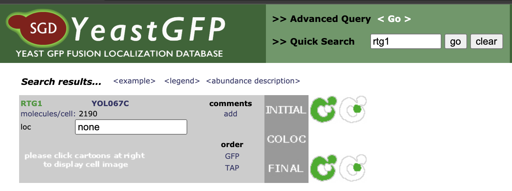
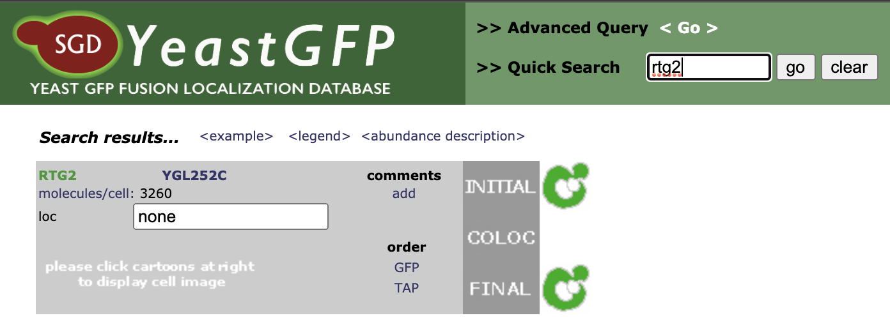
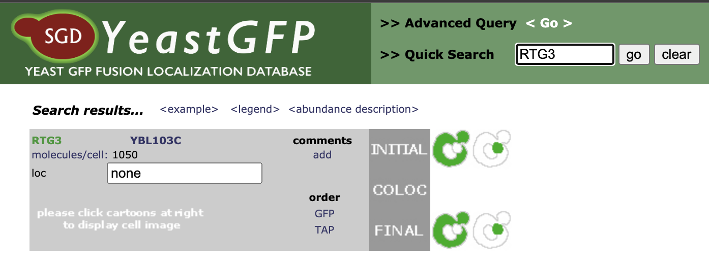
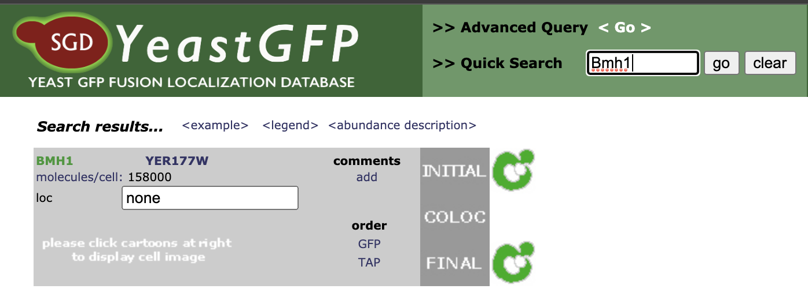
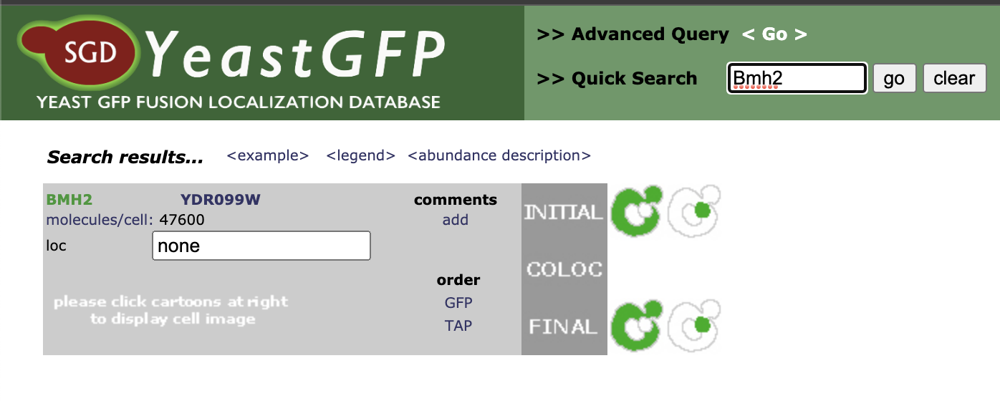
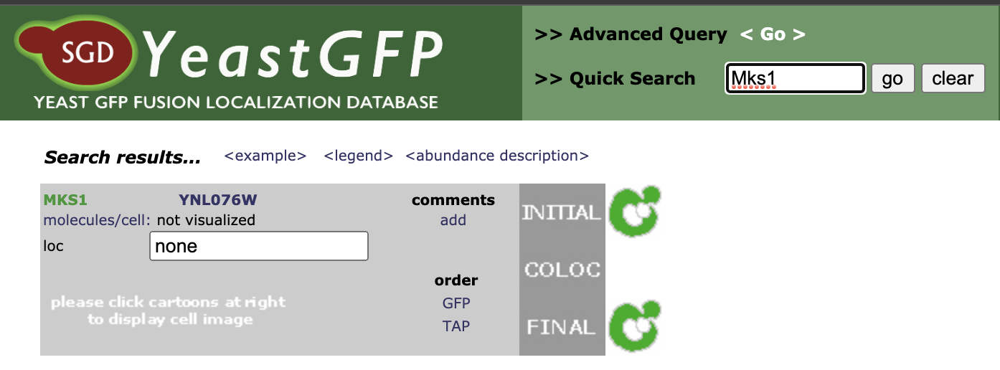
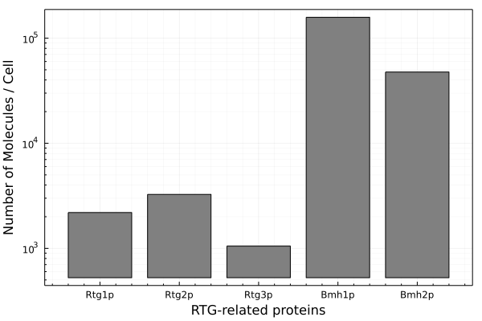

Expression Level of RTG proteins
Contents
Expression Level of RTG proteins#
Data Source: https://yeastgfp.yeastgenome.org/
Accessed on: 2021/05/07
Rtg1#

Rtg2#

Rtg3#

Bmh1#

Bmh2#

Mks1#

Summary#
Protein Name |
molecules/cell |
|---|---|
Rtg1p |
2190 |
Rtg2p |
3260 |
Rtg3p |
1050 |
Bmh1p |
158000 |
Bmh2p |
47600 |
Mks1p |
not visualized |
using Plots
# Expression level
explvls = (
Rtg1p=2190,
Rtg2p=3260,
Rtg3p=1050,
Bmh1p=158000,
Bmh2p=47600
)
bar(collect(explvls), color=:grey, framestyle=:box,
yscale=:log10, ylabel="Number of Molecules / Cell", minorgrid=true,
xticks=(1:5, string.(keys(explvls))), xlabel="RTG-related proteins",
legend=false)
